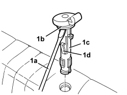

7050B08 GUIDE BUSH FOR HEAD RESTRAINT (ONE) FOR REAR SEAT - R.R
- Path
- Procedures > 70 FITTINGS > 7050 REAR SEATS > 7050B REAR SEAT HEAD RESTRAINT/ARMREST > 7050B08 GUIDE BUSH FOR HEAD RESTRAINT (ONE) FOR REAR SEAT - R.R
- Kind
- repair procedure (removal / refitting; the operation number is the code)
- Applies to
- all engines; all production periods
- Interactive page
- https://sloeber94.github.io/elrnDB/alfa/159/en/#/939011333
Applies to: all engines; all production periods
 Removing
Removing
 Refitting
RefittingOp. 7050B12 REAR SEAT HEAD RESTRAINT - R.R.
1. Using a suitable screwdriver (1a) and a mallet, tap the collar (1b) and lift up the guide bush (1c) releasing the front retainer (1d).

Applies to: all engines; all production periods
Refitting
Removing- Check that the guide bush is not damaged; if the front retainer is damaged, replace the guide bush.
- Place the guide bush in position and attach the front retainer.
Topics linked from this page (1)
Topics that link to this page (7)
- 7050A43 SPLIT REAR SEAT ABCKREST ATTACHMENT/LOCKING DEVICE - R.R.
- 7050A53 SPLIT REAR SEAT BACKREST FRAME (ONE), LEFT OR RIGHT - R.R. WITH BACKREST REMOVED
- 7050D34 TRIM FOR LEFT REAR SEAT BACKREST (TWO SEATER) - R.R.
- 7050D35 LEFT REAR SEAT BACKREST COVER (TWO SEATER) - R.R. WITH BACKREST REMOVED
- 7050D36 TRIM FOR RIGHT REAR SEAT BACKREST (INDIVIDUAL) - R.R.
- 7050D37 RIGHT REAR SEAT BACKREST COVER (SINGLE) - R.R. WITH BACKREST REMOVED
- 7065B18 CENTRE REAR SEAT BELT - R.R.